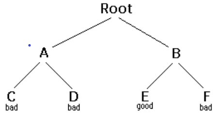

Backtracking
Backtracking is aform of recursion
The usual srenario is that yuo are faced with a number of option and you must choose one of these.after you make you
choice you
will anumber of option and you must choose one these.After you make you
repeated over and over unit you reach afinal.if you made a good sequence
Suppose you get to a bad leat. you can backtrack to the rearch the for good leaf by revoking you most recent choice
this need an example

- staring at root, you options are A and B.you choose A.
- At A,you options are C and D. you choose C.
- C is bad .GO back to A.
- At A, you have already tried C, and it faild.try D.
- D is bad.GO back to A.
- At A. you have no options left to try .GO back to Root.
- At root ,you have already tried A;try B.
- At B, your options are E and F.try E
- E is good CongratulationI
in the example we drew a picture of tree. The tree is an abstract molel of the possibbile sequences of choices we could
make. ther is also a data structure called atree,butt usually we dont have a data structure to tell us what choicewe
have. (if we do have an actul tree data structure, backtracking on it is called depth- first tree searching.)
The backtracking alogorithm
boolean solve(Node n) {
if n is a lraf node {
if the leaf is a goal node,retu6rn true
else return false
} else {
for ecach child cof n {
if solve(c) succeeds,retyrn true
}
return false
}
}
notice that the alogorithm is expressed as a boolean function. this is to understanding the alogorithm.if
solve(n) is trus.that means node n is part of a solution-- that is one of the nodes on a path from the root to
some goal node we say that n is solvable if solve(n)is false, then there is no path that inclues n any node.
How does this work
if any child of n is solvable, thenn is solvable
if no child of n is solvable, then n is not solvable
Hence,to decide whether any non-leaf node n is solvable (part of a path to a goai node),all you have to do is test any
child of n is solvalbe.this is done recursively,on each child of n.in the above code,this is done by the lines
for each child c of n {
if solvable(c) succeeds,return true
}
return false
Eventually the recursion wll "bottom" out at node if the leaf is a goal node it is solvable, if the leaf node a goal
node, it is not solvable. this is base case in the above code,this is by the lines
if n is leaf node {
if the leaf is a goal node, retur true
else return false
}
The backtracking aigorithm is simple but important. you should understand it thoroughly. Another way of stating it is as follows
To search a tree
- if the tree consists of a single leaf, tesf,test it is a goai node.
- Otherwise,search the subtrees unit you fine one containing a goal node.or unitl you have
seached them all unsuccessfully.
Non-recursive backtracking,using a stack
Backtracking is a raher typical recursive algorithm,and any recursive aigorithm can be a stack aigorithm.in fact.
that is how you recursive algorithm are translated into machine or assembly language.
boolean solve(Node n) {
put node n on the stack;
while the stack is not empty {
if the node at top of the stack is a leaf {
if it is a goal node, return true
else pop it off the stack
}
else {
if the node at the top of stack has untried children
push the next untried child onto the stack
else pop the node off the stack
}
return false
}
Starting from the root,the only nodes that can be pushed onto the stack are the children of the node currently on the top of the
stack,and these are only pushed on one child at a time hence the nodes on stack at all times describe a valid path in the
tree nodes are removed from the stack only when it is known that they have on goal nodes among their descendents therefore,
if the root node gets removed(making the stack empty),there must have been no goal nodes at all,and no solition to the
problem
when the stack algorithm terminate successfully, the nodes on the stack.form (in reverse order) a path form the root to a goal
node
similary, when the recursive lgorithm finds a goal node, the path information is embodied(in reverse order) in the sequence of
recursive calls. thus as the recursion unwinds, the path can be one node at a time,by (for instance)printing the node
at the current level, or storing it in an array
Here is the recursive backtracking algorithm,modified singhtly to print (in reverse order) the nodes aling the successfulpath:
boolean solve(Node n) {
if n is a leaf node {
if the leaf is a goal node {
print n
return
}
else return
} else {
for each child c of n {
if solve(c) succeeds {
}
}
return false
}
}
Keeping backtracking simple
All of these version of the backtracking aligorithm are pretty simple, but when applied to a problem, they can get.pretty
cluttered up with details.Even determining whtether the node is a leaf can be compiex:
for example, if the path represents a series of moves in chess endgame problem, the leaves are the chackmate and stalemate
solutions
TO keep the program clean, therefore.tests like shoulid be buried in methods.in a chess game,for example,you coulid test
whether a node is a leaf by writing,agameOver method(or you coulid even call itisLeaf),this method would encapsulate all the
ugly details of figuring out whether any possible moves remain
Notice that the backtracking algorithm require us to keep track, for eah node on the current path, which of its children have
been tried already (so we don't have to try them again). in above code wemade this look simle.by just saying for each child
c of n,in reality, it may be difficult.to figure out what the possible chaild are, and there may be no abvious way to step though
them.in chess, for example,anode can represent one arrangement of pieces on a chessboard,and each child of that node can
represent the arrangement.after some piece has made a legal move. How do you find childern.and how do you keep track
of which ones you've alredy eexamined?
the most straightforward way to keep track of which childran of node have tried as follows:Upon initial entry to the
node (that is. when you fist get there from of above, make a list of all its children.As you try each child. take off the list.When
the list is empty,ther are no remaining untried children.and you can return"failure" this is asimple approach.but it may require
quite a lot of additonal work.
There is easier way to keep track of which children have been,if you ordering on the childern.if there is an
ordering,and you know which child you just tried,you can determine which child to trynext
For example you might be able to number thechildren 1 through n,and try them in numerical order the, if you have just tried
child k, you know that you havea ready tried children 1 through k-1, and you have not yet tried childern k+1 through n . Or, if you
are trying to color a map with just four color, you can always try red fist yellow, then green, then blue. if child yellow fails,
you know to try child green next if you are searching a maxe, you can try choices in the left, right (or prehaps
north, east, south,west).
it isn t always easy to find a simple way to order the children of a node in the chess game example, you might number you
piecs (or prehaps the squares of the boarod) and try then numerical order but in addition each piece may also have several
move and these must also be ordered.
Example: tree Search
for starters, let s do the simplest possible example of backtracking,issearching an actual tree we also use the
simple kind of tree, a binary tree
public class Binary tree {
Binary tree leftchild = null;
Binary tree nightchild = null;
boolean isGoalNode = false;
string Name;
Binary Tree(String name, Binary tree left, Binary tree right, boolean isGoalNode) {
this name = name;
laftchild = laft;
rightchild = right;
this isGoalNode = isGoalNode;
}
}
Next we will create a treesearch class, and in it we will define a method make() which constructs the binary tree.
static Binary tree maketree() {
Binary tree root, a, b, c, d, e, f,
c = new Binary Tree ("C." null, null, false;
d = new Binary Tree ("D," null, null, false;
e = new Binary Tree ("E," null, null, false;
f = new Binary Tree ("F," null, null, false;
a = new Binary Tree {"A", c, d, false };
b = new Binary Tree {"B", e, f,false };
root = new Binary Tree {'Root', a, b, false};
return root;
}
Here's a main program to create a binary tree and try nad try to sovle it:
public static void main(string args[]) {
Binary Tree tree = makeTree{);
system.out.printin{solvable(tree});
}
And finaly, here the recursive backtracking routine to *solve* the binary tree by fidring a goal node
static boolean solvable (Binary Tree node) {
/*1*/ if (node == null) return false:
/*2*/ if (node.isGoalNode) return true:
/*3*/ if (solvable{node.leftchilde}) return ture:
/*4*/ if (solvable{node.rightchild}) return:
/*5*/ return false:
}
i think the version is simple, but the second vervion is efficient.
What are the children ?
One of the things that simplifies the above binary tree search is that,at each choice point, you can ignore all the previous
choices.previous choices don't give you any information about what you should do next;as far as you,both the left and right child are possible solutions in many problems however,you maybe able to wliminate children immediately,without
recursion
Consider, for example, the problem of four coloring a it is a theorem of mathematics that any map on a plane no matter
how convoluted the countries are can be colored withat most four colors so that no two countries that share a border are
sarne color
TO color a map you chose acolor for the fist counter then a color for the secong country and so no unit all countries are
colored
There are tow ways to do this ;
Method 1. try each of the four possible colors, and recur When you run out of countries,check whethe you are at a goal node
Method 2.try only those colors that have not already been used for an adjacent counrty,and when you run out of
countries you have successfully colored the map
Let's apply each of these tow methods to the problem of coloring a checkerbord this should be easly solvable after all,a
checkerbord only needs tow colors
boolean maplsOK()
used by method 1 to check (at a leaf node) whether the entire map is colored correctly
boolean okTOcolor(int row ,int column,int color)
Used by method 2 to check, at every node whether there is an adjacent node alreaty colore the given color
int[]NextRowAndColumn(int row, int column)
Here's the code for method 1:
boolean expore1(inAnd row, int column,int color) {
if (row > = NUM=ROWS)return maplsOK();
map[row] [column] = color;
for (int nextColor =RED;nextcolor <=BLUE; nextcolor++) {
int[] next = NextRowAndColumn(row, column);
if(explore1(next[0],nextColor)) return ture;
}
retur false;
And here's the code for method 2;
boolean explore2(int row ,int coloumn, int color) {
iF (row >= NUM _ROWS)return ture;
if (okTOcolor(row,column,color)) {
map[row][column] =color;
for (int nextColor = RED; nextColor <= BLUE;nextcolor++) {
int[] next = nextRowAndColumn(row, column);
if(explore2(next[0], next[1], nextColor)) return true;
}
}
return false;
}
Those appear pretty similar, and you might think they are equalty good . However,the tirning informationsuggests other wise:
| white color | 2 by 3 map | 3 by 3 map | 3 by 4 map |
 |
|
 |
|
the goai is to reverse the positions of the marbles:
| |
|
|
|
The black marbles can only move to the right, and the white marbles can only move to the letf (no backing up).At each move.a
marble can either:
- Move one space ahead if that space is clear.or
- jump ahead over exactiy one marbleor the opposite color,of the space just beyond that marble is clear
- if the position is emply, no move is possible;
- if the possition contans a black marble,the method.the method cheak for a move or jump to the right;
- if the position contains a white marble the methpde cheack for a move or jump to the left
for Example , youn could make the following sequence of movs:
Starting position: |
|
Black moves ahead: |
|
White jumps: |
|
Blaxk moves ahead: |
|
Black jumps : |
|
White moves ahead : |
|
The backtracking method is named solvable and boolean in solvable we shal need to cheak whether we are at a leaf.
which in this case means a postion from which no turthe moves are possible this is'n't so easy
Now to the program The main program will initiaize board and call a recursive backtracking routine to attemp to solve the
puzzle the backtracking routine will either succeed and print out winning, or it fall ,and main program will have to
print out the bad news
The backtracking method is named solvable and returens a return a boolean in solvable we shal need to check whether we are at a leaf,
which in this case means a position from which no futher moves are possible this is't so easy
Each possible move will result in a new bord position and these new bord positions are the childran of the current bord
position Hence to find the children of a node (that is of a bord position), we need only fine the possible moves form that node
Remember that it is also highly desirable to find an ordering on these possible moves
Here it is time to stop and take thought To make progress we must anlyze the game extent probably a number of
approaches would work and what follows is based on the way i worked it you were to progarm this puzzle you might find
a diffrent but equalty valid approach
Next .notice that for a give bord position each marble occupies a unique space Hence, instead of talking about moving a
preticular marble we can talk a about moving the marble in a particular space if a move is possible form a give space ,then that
must be the only move possible from that space bucause if the marble in that space it is unique There is a slight
compliction because not every space containg s marble but the space the marble stay in one place.
Now we have a simpler ordering of moves to use in our program just check in the 2n+1 spaces of the For each
space either Zero or one moves is possible. with this understanding, we can write a boolean method canMOve(int[] board,int
position wchich determines whether a move is possible from the given position:
we write another methodint[] makeMove(int[]oldBoard,int position) that will take a board and a position, make a move from
that position.and as its value a new board (We could write this somewhat more efficiently changing the old borad.
rather than *mutative*
Along withcanMove and makeMove,we are using methods puzzleSolved and printBoard with meaning that
should be abvlous
boolean solvable(int[] board) {
if (puzzleSolved(board) {
return true;
}
for(int position = O; position BOARD_ SIZE;position++) {
if can[]MOve(board, position)) {
int[] newBoard = makeMove(board,position);
if (solvable(newBoard);
printBoard(newBoard));
return ture;
}
}
}
return false;
}
Along with canMove and makeMove,we are using methods puzzleSolved and printBoard with meanings thatshold be obvious
Here is some output from the program:
WHTE WHITE WHITE ________ BLACK BLACK BLACK